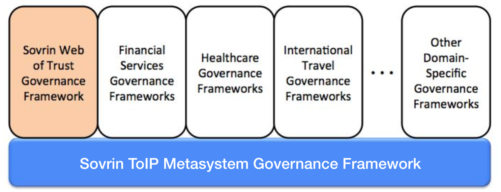
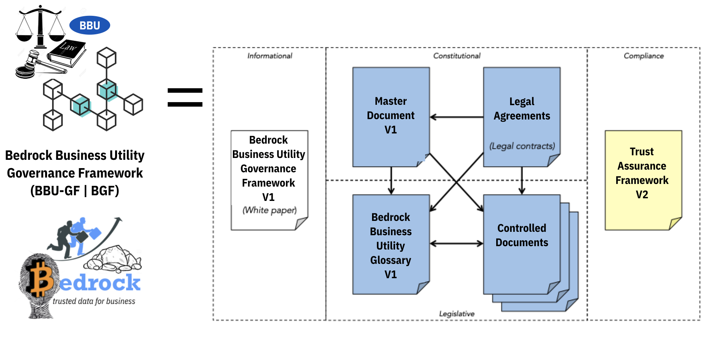

Master Document
Preface¶
This is an official document of the Sovrin Governance Framework V2 approved by the Sovrin Board of Trustees. If you have comments or suggestions, we invite you to contribute them to the living community version of this document—access is open to anyone. If you are interested in joining the Sovrin Governance Framework Working Group, please visit our Meeting Page.
Acknowledgements¶
This document was produced on behalf of the Board of Directors by the Governance Framework Working Group.
Introduction¶
The Bedrock Governance Framework (BGF) serves as the constitution for the Bedrock Business Utility. The BGF (also referred to as "BBU-GF") is a specialized Domain-Specific Governance Frameworks (DSGFs) as described in the Sovrin ToIP Metasystem Governance Framework (STM-GF) Master Document.

The BGF leverages the principles, policies, terminology, and standards defined in the STM-GF to enable trusted digital commerce based on decentralized identity.
A key objective of the BGF is to address any concerns or risks that Consortium members may have with participation compliance with Data Protection Regulations such as the EU General Data Protection Regulation (GDPR), the California Consumer Privacy Act (CCPA), and the Canadian Personal Information Protection and Electronic Documents Act (PIPEDA).

The BGF formally consists of a set of interrelated documents that collectively forms the governance model for the Consortium and the DID Ledger (did:sov:biz) that the Consortium manages. The documents are organized in three (3) categories; Blue = Normative, Yellow = Assessment, White = Informative.
| Category | Name | Description |
|---|---|---|
| Primary (White) | Bedrock GF Whitepaper | Introduction to the Bedrock Governance Framework V2 |
| Primary (Blue) | Bedrock Governance Framework (BGF) Master Document | The “constitution” of the Consortium, this document defines the purpose, core principles, and core policies, and also references all other documents in the GF. |
| Primary (Blue) | Bedrock Glossary | A comprehensive glossary of terms used throughout all the GF documents |
| Primary (Yellow) | Bedrock Trust Assurance Framework | This document defines criteria and processes for assessing conformance of different consortium stakeholder to the policies of the Bedrock Governance Framework. |
| Legal (Blue) | Bedrock Founding Member Agreement | Contractual instrument between the Consortium and a Founding Member. |
| Legal (Blue) | Bedrock Steward Member Agreement | Contractual instrument between the Consortium and a Steward Member. |
| Legal (Blue) | Trust Anchor Agreement | Contractual instrument between the Consortium and any person or organization initiating a write transaction to the Identity Utility Ledger. |
| Controlled Documents (Blue) | Governing Body Policies | The governance policies that apply to all Bedrock Governing Bodies. |
| Controlled Documents (Blue) | Ledger Access Policies | Governing policies for reading and writing to all Bedrock Ledgers and the processing of BBU transactional data. |
| Controlled Documents (Blue) | Member Business Policies | Governing qualification, application, activation, operation, suspension, and termination of Founding Members. |
| Controlled Documents (Blue) | Member Technical Policies | Governing the security, node operation, node selection, and reporting requirements for Founding Members. |
| Controlled Documents (Blue) | Economic Policies | Governing economic incentives, fees, and regulatory compliance and budgetary management. |
| Controlled Documents (Blue) | Bedrock Certification Mark Policies | Governing the establishment of and use of the Bedrock Certification policies for ecosystem stakeholders. |
Purpose¶
The purpose of the Bedrock Business Utility is to provide a decentralized global public utility for trusted commerce. It is one of many possible DID Ledgers ("Peer-Nets").
The purpose of the Bedrock Governance Framework (BGF) is to define the business, legal, and technical policies for the Bedrock Business Utility.
The purpose of the Bedrock Consortium is to administer decentralized governance for Bedrock Business Utility.
Core Principles¶
Unless otherwise noted, the Bedrock Governance Framework (BGF) is aligned with the principles outlined in the STM-GF Master Document.
Core Polices¶
In keeping with all Core Principles and especially the Decentralization by Design and Security by Design principles:
- Policies, practices, procedures, and algorithms governing participation of Stewards and operation of Nodes MUST follow all Core Principles.
- The Consortium MUST publish the following Controlled Documents managed as specified by Bedrock Governing Bodies: a. Member Business Policies b. Member Technical Policies c. Ledger Access Policies
Guardianship¶
In keeping with the Guardianship principle, a Guardian SHOULD:
- Act in the Dependent person’s best interest.
- Exercise good judgment and carefully manage responsibilities.
- Avoid commingling—keep Dependent’s property separate (e.g., separate DIDs, Public Keys, Wallets, Vaults, etc.).
- Keep detailed records of all actions taken on behalf of the Dependent.
- Not violate the Anti-Impersonation principle (section 2.11.5).
- Be subject to applicable legal structures regarding the granting and revocation of Guardianships.
Inclusion¶
In keeping with the Inclusive by Design principles but in recognition of the permissioned write structure of the Bedrock Business Utility:
- Read access to the Bedrock Business Utility MUST be open to all types of entities.
- Write access will be limited to members in good standing within the consortium.
Trust Assurance¶
In keeping with all Core Principles and especially the Decentralization by Design principles:
- The Consortium MUST specify policies, practices, and procedures for assessing conformance to the Bedrock Governance Framework by publishing and maintaining the Bedrock Trust Assurance Framework as a Controlled Document managed as specified by Sovrin Governing Bodies. The Controlled Documents may leverage the services and guidance of the Sovrin Trust Assurance Framework.
- The Bedrock Consortium MUST publish the Bedrock Trust Mark Policies as a Controlled Document managed as specified by Bedrock Governing Bodies. The Consortium may decide to leverage instead the Trust Mark Policies but a Bedrock Controlled Document must specify such a decision/policy.
- An Entity serving in one of the Sovrin Network who meets the requirements in the Bedrock Trust Assurance Framework MAY use the appropriate Bedrock Trust Mark as specified in Bedrock Trust Mark Policies.
Economics¶
In keeping with the Sustainability principle:
- The Consortium MUST publish the Bedrock Economic Policies as a Controlled Document managed as specified by Bedrock Governing Bodies in conjunction with Consortium legal counsel.
- The Consortium MUST manage Ledger Fees and any mechanism used for paying them to ensure economic viability and sustainability for the Consortium to keep with its charter as a non-profit public trust organization.
- The Consortium MUST retain a qualified Auditor to publish an annual public audit of Consortium finances.
Governance¶
The Bedrock Governance Framework Master Document and the Controlled Documents listed in Appendix A shall be revised from time to time. The policies in this section govern this process.
Unless otherwise noted, the Bedrock Governance Framework (BGF) will adhere to the same procedures for managing document lifecycles as outlined in Section 4 of the STM-GF Master Document.
All Bedrock Governance Framework documents will reside in a Github source control repository and will use the associated Issue Tracker for change management.
Appendix A: Controlled Documents¶
The following Controlled Documents are normative components of the Bedrock Governance Framework V1. All framework documents are published by the Consortium in two forms:
- A static PDF document representing the current approved version. A link is always available via the Github repo and the table below.
- A sub-section of the Sovrin website so that all documentation is easily navigated.
Issues / Comments¶
A Github source control repository and will use the repo's Issue Tracker for change management.
Definitions¶
| Document Name | Description | Governed By | Normative Location |
|---|---|---|---|
| BBU Glossary | Definitions of all terms used in the BGF | Governance Framework Working Group | Approved PDF Version |
| Governing Bodies | Definitions of governing bodies within the Consortium | Bedrock Board of Directors | Approved PDF Version |
| Ledger Transaction Data | Defines the data and metadata process by a Steward Node | Technical Governance Board | Approved PDF Version |
Specifications¶
| Document Name | Description | Governed By | Normative Location |
|---|---|---|---|
| Decentralized Identifiers 0.11 | Specification for DIDs and DID documents | W3C Credentials Community Group | https://w3c-ccg.github.io/did-spec/ |
| Sovrin DID Method 1.0 Specification | Specification for DIDs on the Sovrin Ledger or Sovrin Microledgers | Sovrin Technical Governance Board | https://github.com/sovrin-foundation/sovrin/blob/master/spec/did-method-spec-template.html |
| Verifiable Credentials Data Model 1.0 | Specification for verifiable credentials | W3C Verifiable Claims Working Group | https://w3c.github.io/vc-data-model/ |
Policies¶
| Document Name | Description | Governed By | Normative Location |
|---|---|---|---|
| Governing Body Policies | Chartering and functioning of Bedrock Governing Bodies | Board of Directors | Approved PDF Version |
| Ledger Access Policies | Read and write access to the Bedrock Business Utility | Governance Framework Working Group | Approved PDF Version |
| Member Business Policies | Member qualification, enrollment, and operational status | Membership Committee | Approved PDF Version |
| Membership Technical Policies | Technical requirements for operating and protecting a components of the BBU infrastructure. | Technical Governance Board | Approved PDF Version |
| Economic Policies | Budgetary policies for the BBU. | Finance Committee | Approved PDF Version |
| Trust Mark Policies | Acceptable uses of the Bedrock Trust Mark | Governance Framework Working Group | Approved PDF Version |
Frameworks¶
| Document Name | Description | Governed By | Normative Location |
|---|---|---|---|
| Trust Assurance Framework | Trust assurance for BGF actors | Governance Framework Working Group | Approved PDF Version |